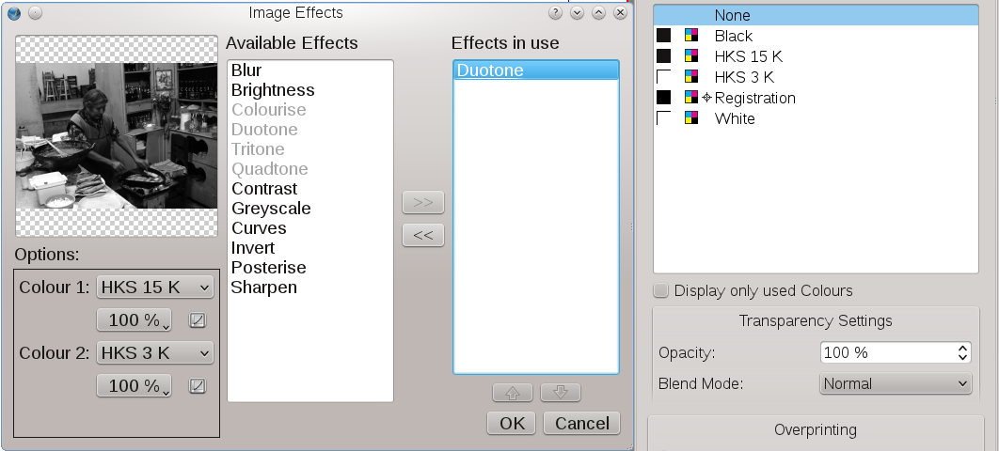

Lavorare con i file di Photoshop®
Introduzione
Adobe Photoshop è uno dei programmi per computer più noti al mondo, ed è ampiamente utilizzato nella grafica professionale, sia per la stampa che per il web. Anche se esistono ottime applicazioni open source per la grafica bitmap, come GIMP o Krita, vi sono casi in cui Photoshop è l'unica applicazione che può essere usata; questo accade specialmente nel mondo della prestampa.
Una delle ragioni della potenza di Photoshop è il suo formato di file nativo, il PSD. Un file PSD può non solo contenere dati immagine, ma è piuttosto un grande contenitore in cui possono essere inseriti anche metadati, informazioni sulla fotocamera, testo, elementi grafici vettoriali, e altro. La maggior parte degli altri programmi e formati hanno solo una piccola parte di tutte queste capacità.
Importazione PSD
Scribus ha la capacità di importare direttamente i file PSD delle versioni fino alla 6, che è l'ultima per cui esiste una documentazione pubblica. Il team di Scribus è riuscito però a scoprire il funzionamento di certe caratteristiche dei file creati con versioni successive di Photoshop; quindi la maggior parte dei file PSD può almeno essere caricata in Scribus, anche se certe loro caratteristiche potrebbero non essere riconosciute e interpretate correttamente.
In generale Scribus è in grado di riconoscere e gestire molte caratteristiche del formato PSD, tra cui:
- la capacità di manipolare e regolare le impostazioni dei livelli;
- la possibilità di abilitare e usare le maschere e i tracciati di ritaglio incorporati nel file;
- quasi sempre, i profili colore ICC incorporati nel file (purché non siano difettosi) vengono rilevati e utilizzati, quando la gestione del colore in Scribus è attiva;
- Scribus in genere importa i file PSD in scala di grigi a 8 bit, RGB e CMYK senza problemi;
- la trasparenza alfa è riconosciuta;
- Scribus importa i file PSD con livelli normali, e mostra i singoli livelli nella finestra Ulteriori informazioni che si può aprire dal menù contestuale;
- le maschere di ritaglio nei file PSD vengono riconosciute e possono essere usate per il flusso di testo;
- i modi fusione presenti nel file PSD possono essere usati per modificare la visualizzazione e la stampa dell'immagine. Inoltre è possibile modificare la fusione, o applicare altri modi fusione tra livelli PSD. Il file originale resta invariato;
- quasi sempre Scribus individua automaticamente la codifica del file, sia essa ASCII, binaria, o binaria con JPEG.
Potenziali problemi
- I livelli di regolazione e i livelli di effetto non sono ancora riconosciuti. Se sono presenti, Scribus fa ricorso a una versione del file ad unico livello.
- I file TIFF con livelli salvati da Photoshop spesso non sono ben gestiti da altri visualizzatori TIFF e applicazioni di importazione. Questo accade perché Photoshop inserisce i livelli di tipo PSD in un marcatore privato. Scribus tenta di leggere le informazioni sui livelli PSD, e se vi riesce le rende accessibili nella finestra Ulteriori informazioni sull'immagine. I livelli di testo e vettoriali all'interno di questo marcatore privato non sono ancora riconosciuti da Scribus.
Particolarità
- I file DCS (Desktop Color Separations) 1.0/2.0 sono uno speciale tipo di EPS salvati in Photoshop, e vengono importati direttamente (in modo simile ai file PSD) insieme ai profili colore ICC. La qualità dell'immagine dovrebbe essere vicina o equivalente a quella del file PSD originario. Le maschere vettoriali vengono rilevate e possono essere usate per controllare la visualizzazione nella finestra Ulteriori informazioni. I file DCS possono essere salvati anche da QuarkXPress®, ma per ora questa variante viene importata usando Ghostscript come filtro. Questo avviene in parte perché il modo con cui QuarkXPress® li esporta non è conforme alle specifiche tecniche DCS.
Ulteriori suggerimenti per l'importazione DCS:
- gli effetti immagine non possono essere applicati ai file DCS per motivi tecnici;
- prima di importare un file DCS, assicuratevi che il “file master” DCS (che ha estensione *.eps) e i file per ciascuna separazione (che hanno estensioni *.C, *.M, *.Y, *.K rispettivamente, più un file per ogni colore spot) si trovino nella stessa directory. Diversamente, Scribus non può importare l'immagine correttamente, e si verificano degli scostamenti di colore.
- Scribus è in grado di individuare bicromie, tricromie e quadricromie nei file PSD ed EPS salvati da Photoshop e di importarle. La differenza tra i due formati è che i colori spot devono essere importati manualmente dagli EPS con il comando Modifica > Colori > Importa. Se importate un file PSD, potete manipolare direttamente ciascuno dei colori spot che contiene, usando la funzione Effetti immagine, che si può aprire dal menù contestuale. Nella maggior parte dei casi Scribus individua automaticamente l'immagine come bicromia, tricromia o quadricromia e importa i colori dal file PSD.
 |
|  |
Importazione di un'immagine in bicromia:
nella finestra di importazione Scribus segnala lo “spazio colore” Duotone (in alto)
e carica nell'elenco colori i colori spot utilizzati (in basso a destra).
Nella finestra Effetti immagine, viene automaticamente attivato l'effetto “Bicromia” (“Duotone”) (in basso a sinistra). |
Consigli
- Se avete il file PSD originale di un'immagine, usatelo senz'altro.
- Fate in modo che in Photoshop sia attivata l'incorporazione del profilo ICC corretto. Lo si fa con il comando Immagine > Metodo > Converti in profilo.
- Evitate di usare i livelli di testo. Scribus comprende potenti strumenti per gli effetti di testo e li esporta come vettori, non come bitmap, e questo dà una migliore qualità di stampa. Questo consiglio vale per qualunque applicazione per la grafica bitmap.
- Analogamente, evitate di inserire disegni vettoriali in file PSD. Scribus contiene versatili strumenti di disegno e dà risultati più affidabili per la stampa.
- Scribus può gestire immagini JPEG a colori CMYK create da Photoshop, compresi i loro profili colore ICC, ma in generale è preferibile utilizzare i formati PSD o TIFF, poiché poche altre applicazioni sono in grado di leggere le JPEG CMYK.
- Analogamente, Scribus è in grado di gestire le maschere di ritaglio nelle JPEG salvate da Photoshop.
- Se usate livelli di regolazione e livelli di effetto, salvate una copia del file PSD e poi unite tutti i livelli prima di importare il file in Scribus. Questo rende il file più piccolo, e assicura che non vi siano problemi con l'importazione in Scribus.